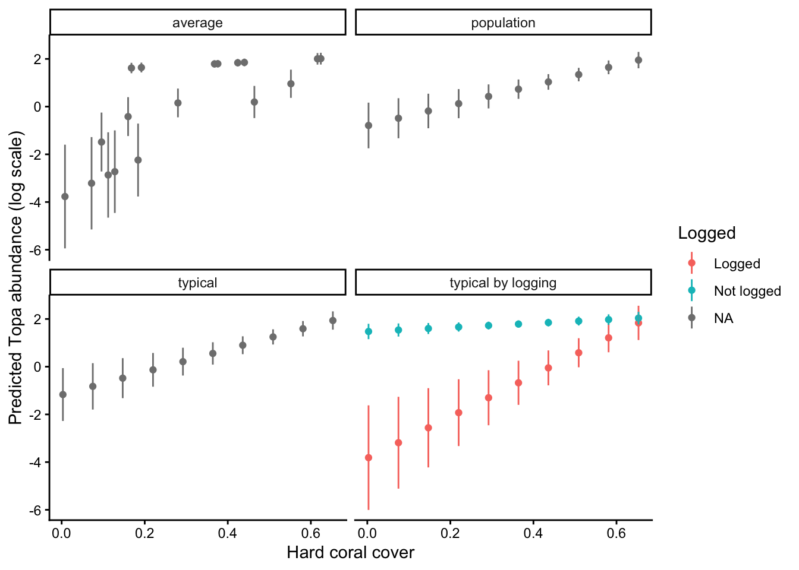
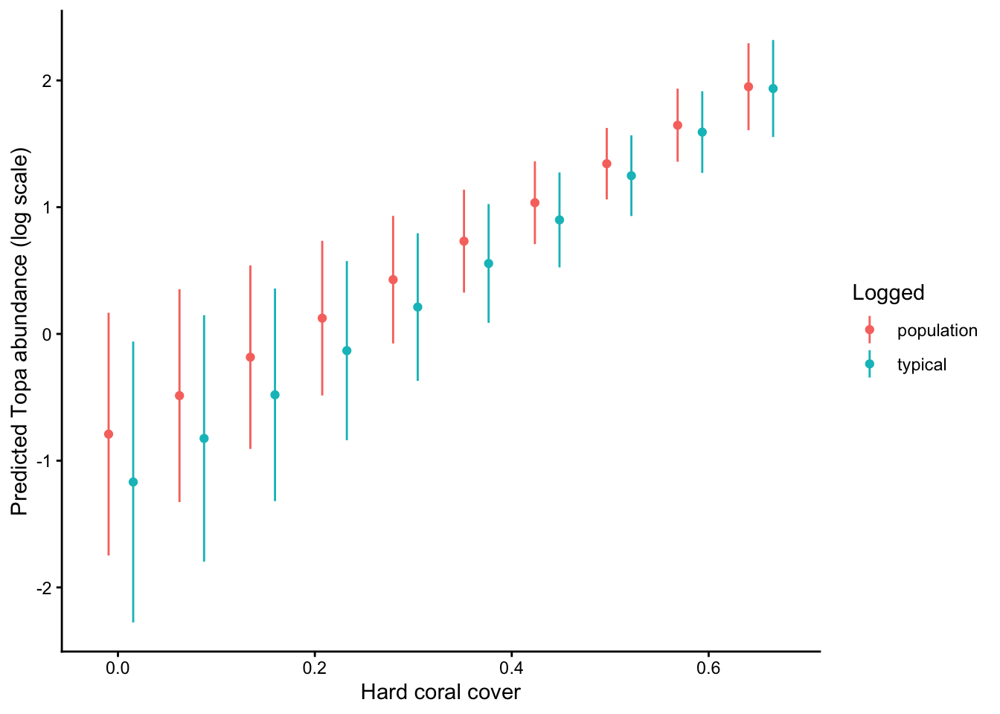

I’ve been a big fan of the visreg package for a while, it makes it convenient to plot predictions from models. But recently I was struggling with a model that had many two-way interactions terms.
I checked out the key alternative to visreg, ggeffects, which is very popular (the paper has over 2000 citations). But the ggeffects page states it will be superseded by the modelbased package. So here’s a quick demo of how to use modelbased to plot interaction effects from a GLM.
modelbased is part of an ecosystem of packages for handling statistical models: easystats.
First I’m going to load data on coral cover and fish abundance from my Example ecological data repo:
library(ggplot2)library(dplyr)
Attaching package: 'dplyr'
The following objects are masked from 'package:stats':
filter, lag
The following objects are masked from 'package:base':
intersect, setdiff, setequal, union
library(readr)# Load data from https://github.com/cbrown5/example-ecological-datadat_url <-"https://raw.githubusercontent.com/cbrown5/example-ecological-data/refs/heads/main/data/benthic-reefs-and-fish/fish-coral-cover-sites.csv"#Convert counts of coral to proportionsdat <-read_csv(dat_url) %>%mutate(cb_cover = cb_cover / n_pts, soft_cover = soft_cover / n_pts )
Rows: 49 Columns: 13
── Column specification ────────────────────────────────────────────────────────
Delimiter: ","
chr (2): flow, logged
dbl (11): site, reef.id, pres.topa, pres.habili, secchi, coordx, coordy, cb_...
ℹ Use `spec()` to retrieve the full column specification for this data.
ℹ Specify the column types or set `show_col_types = FALSE` to quiet this message.
Now we’ll fit a simple poisson GLM. pres.topa is count of topa fish, a fish that likes to live in branching corals (cb_cover), and logged is a binary variable indicating whether the site was near to logging or not (which causes pollution that harms fish and corals).
Call:
glm(formula = pres.topa ~ cb_cover * logged, family = poisson,
data = dat)
Coefficients:
Estimate Std. Error z value Pr(>|z|)
(Intercept) -3.839 1.124 -3.415 0.000639 ***
cb_cover 8.691 1.979 4.392 1.12e-05 ***
loggedNot logged 5.313 1.136 4.675 2.93e-06 ***
cb_cover:loggedNot logged -7.830 2.017 -3.882 0.000104 ***
---
Signif. codes: 0 '***' 0.001 '**' 0.01 '*' 0.05 '.' 0.1 ' ' 1
(Dispersion parameter for poisson family taken to be 1)
Null deviance: 426.61 on 48 degrees of freedom
Residual deviance: 265.33 on 45 degrees of freedom
AIC: 353.22
Number of Fisher Scoring iterations: 6
It simple to then plot the interaction effects. I’m going to do so on link scale (log scale for poisson models):
pr <-estimate_means(m1, by =c("cb_cover", "logged"),estimate ="typical",type ="link")plot(pr) +labs(x ="Hard coral cover",y ="Predicted Topa abundance (log scale)",color ="Soft coral cover", fill ="Soft coral cover" ) +theme_classic()
One neat thing that modelbased does is give you different options for how to estimate marginal means. The default is “typical”, which estimates marginal means at the average value of numerical predictors and averages over frequencies of categorical predicotrs. But you can also do “average” which averages over sample distributions and “population” which attemps to create a counterfactual for all possible combinations of variables.
I’m going to make a dataframe of all three methods so we can compare them:
pr_typical <-estimate_means(m1, by ="cb_cover",estimate ="typical",type ="link")pr_average <-estimate_means(m1, by =list(cb_cover =unique(dat$cb_cover)),estimate ="average",type ="link")pr_population <-estimate_means(m1, by =c("cb_cover"),estimate ="population",type ="link")pr_all <-bind_rows( pr %>%mutate(method ="typical by logging"), pr_typical %>%mutate(method ="typical"), pr_average %>%mutate(method ="average"), pr_population %>%mutate(method ="population"))
Now we plot them:
ggplot(pr_all, aes(x = cb_cover, y = Mean, color = logged)) +geom_point() +geom_linerange(aes(ymin = CI_low, ymax = CI_high)) +facet_wrap(~method) +labs(x ="Hard coral cover",y ="Predicted Topa abundance (log scale)",color ="Logged" ) +theme_classic()

And one more plot just of population and typical to more easily see the diffence:
pd <-position_dodge(width =0.05)pr_all %>%filter(method %in%c("population", "typical")) %>%ggplot(., aes(x = cb_cover, y = Mean, color = method)) +geom_point(position = pd) +geom_linerange(aes(ymin = CI_low, ymax = CI_high), position = pd) +labs(x ="Hard coral cover",y ="Predicted Topa abundance (log scale)",color ="Logged" ) +theme_classic()

You can see see some key differences. The typical method shows effects of hard coral cover for a typical observation. There are slightly more unlogged than logged sites in the data:
table(dat$logged)
Logged Not logged
21 28
So the typical sample is different from a balanced population level average.
The population and typical predictions fall in between the predictions that are conditional on logging status, because both are kinds of averages over the two logging categories.
Predictions from the ‘average’ method show an inconsistent pattern, because they are averaging over samples. You can roughly see the trends for logged and unlogged sites.
Finally, let’s convince ourselves that the unbalanced data is causing these differences. I’m going to randomly remove some unlogged sites to create a balanced dataset, and refit the model: